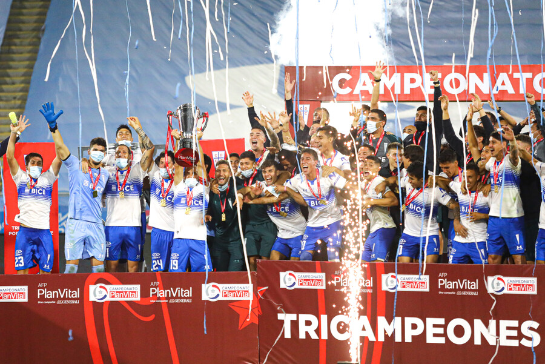
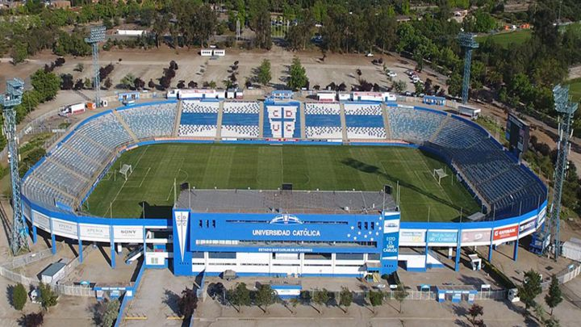
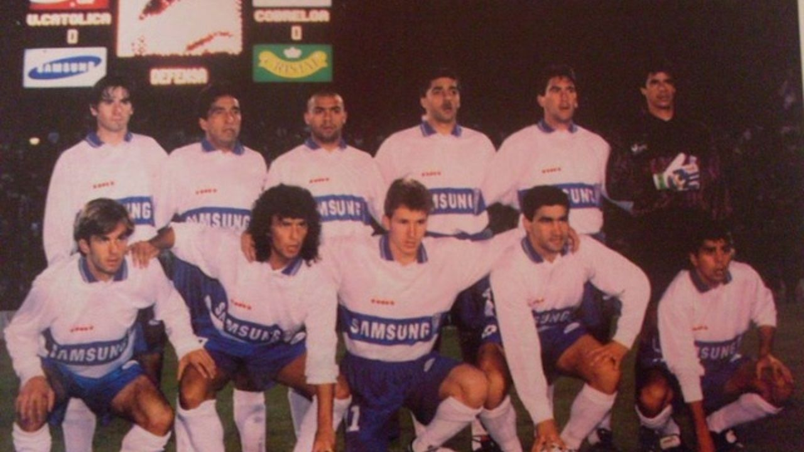

Universidad Católica se coronó campeón de la Supercopa del fútbol chileno año 2021, al remontar y superar 4-2 a Colo Colo en el Estadio Nacional de Santiago.

U. Catolica se proclamo tricampeon del futbol chileno
Noche histórica para el elenco de la franja que baja su decimoquinta estrella y se convierte en un experto en torneos largos al timbrar el cuarto al hilo (2010, 2018, 2019 y 2020), luego de igualar sin goles ante Unión La Calera en San Carlos de Apoquindo.

La UC logra un avance en el nuevo San Carlos de Apoquindo
La UC continúa planificando el gran proyecto propuesto en el 2020, que es la modernización del Estadio San Carlos de Apoquindo. Por esto mismo, Cruzados anunció que aumentarán el capital de recaudación de fondos el cual permitiría llevar a cabo este. Podría estar listo para el 2023.

A 27 años del unico titulo internacional de U. catolica en la copa Interamericana
El 1 de noviembre de 1994 fue cuando la U. catolica pudo levantar su unico triunfo internacional que tiene en sus vitrinas